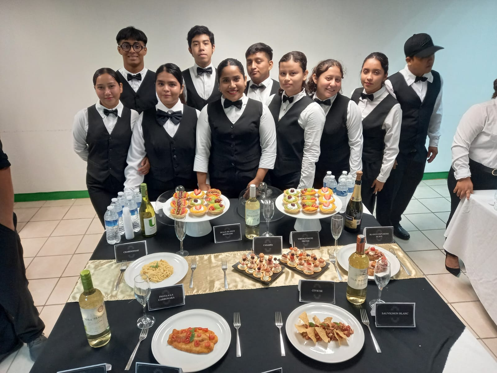
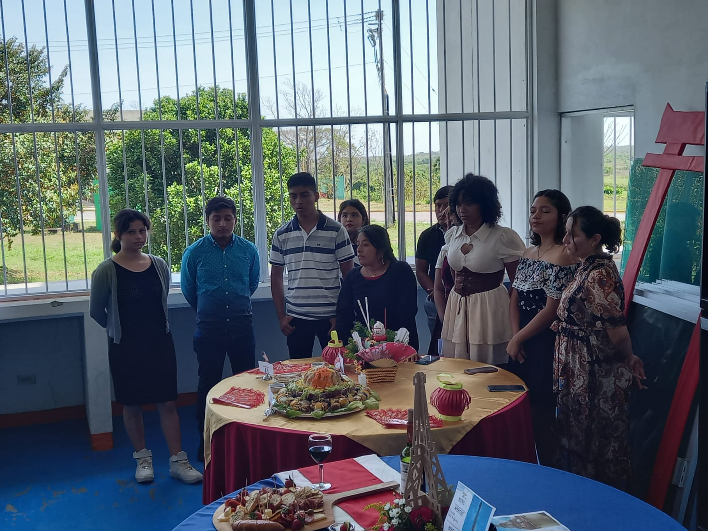
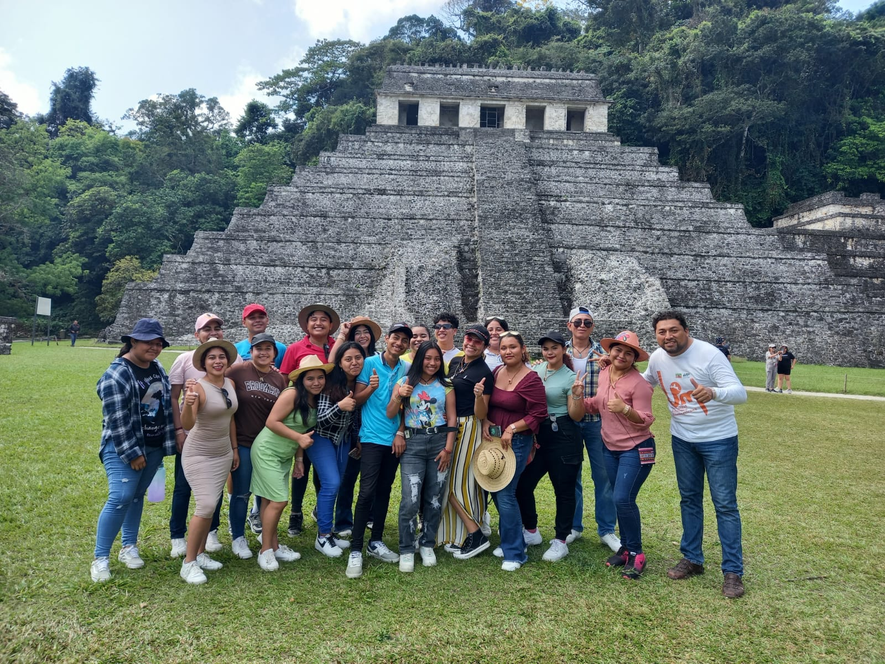
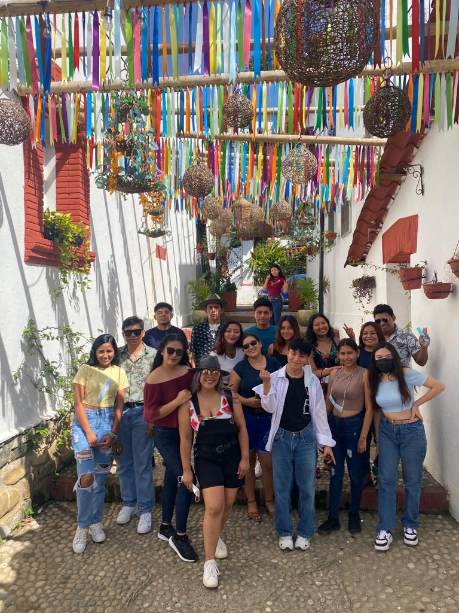
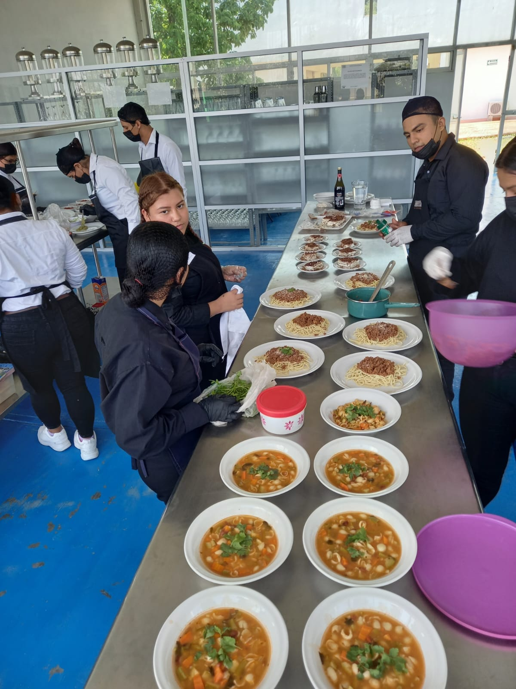

Escolarizada y Mixta
3 años y medio
TSU + Licenciatura
Gestión y desarrollo turístico
Esta carrera es ideal para quienes desean desarrollar proyectos turísticos innovadores y promover el patrimonio cultural y natural.
El egresado será capaz de planear, gestionar y desarrollar proyectos turísticos innovadores que impulsen el desarrollo económico y cultural de las comunidades.
Gestionar empresas y servicios turísticos de calidad.
Diseñar experiencias y productos turísticos innovadores.
Promover el turismo sustentable y el desarrollo comunitario.
Aplicar técnicas de comercialización y promoción turística.
Coordinar proyectos turísticos en empresas y organismos.
El sector turístico ofrece múltiples oportunidades laborales en empresas, organizaciones y proyectos de emprendimiento.
Administración de establecimientos de hospedaje y servicios gastronómicos.
Organización de viajes, tours y experiencias turísticas.
Desarrollo de proyectos de ecoturismo y turismo de aventura.
Organización de eventos turísticos, centros recreativos y parques temáticos.
Nuestros estudiantes realizan visitas empresariales, prácticas comunitarias y proyectos turísticos reales.




